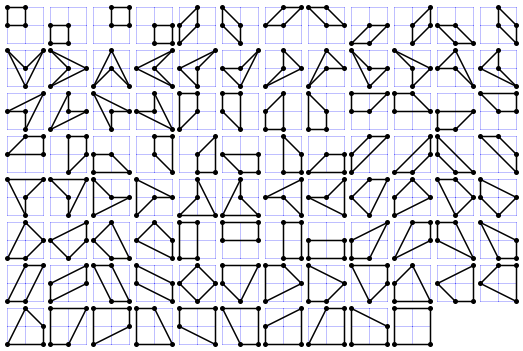

Project Euler 453
Project Euler 453
题目
Lattice Quadrilaterals
A simple quadrilateral is a polygon that has four distinct vertices, has no straight angles and does not self-intersect.
Let \(Q(m, n)\) be the number of simple quadrilaterals whose vertices are lattice points with coordinates \((x,y)\) satisfying \(0 \le x \le m\) and \(0 \le y \le n\).
For example, \(Q(2, 2) = 94\) as can be seen below:

It can also be verified that \(Q(3, 7) = 39590,Q(12, 3) = 309000\) and \(Q(123, 45) = 70542215894646\).
Find \(Q(12345, 6789) \bmod 135707531\).
解决方案
令\(M=12345,N=6789,P=(M+1)(N+1)\)是网格点总数。
我们要数的简单四边形分为两类：凸四边形；凹四边形（四点中有一点在另外三点构成三角形内部）。
核心做法是先把与共线退化有关的量抽象成\(L_3,L_4\)，分别表示共线三点组数，共线四点组数的组数；再将将网格内全部非退化三角形的面积总和记为\(S\)；最终把 \(Q\) 写成仅依赖 \(P,S,L_3,L_4\) 的闭式。注意，\(L_3,L_4,S\) 都可转成含 \(\gcd\) 的双重和，再用 Möbius 反演把计算时间复杂度降低。
四点集中若出现某条线上三点，则不能形成简单四边形。于是\(U=\dbinom{P}{4}-(P-3)L_3+3L_4\)是无三点共线四点集的数量。这是因为每个共线三点组可与任意其余 \(P-3\) 点组成坏四点集；若四点全共线，会被上式减了 4 次，但它本来在 \(\dbinom P4\) 里只该去掉 1 次，所以要回补 3 次，即 \(+3L_4\)。
记\(\displaystyle I=\sum_{\Delta} i(\Delta),\)其中 \(i(\Delta)\) 是三角形 \(\Delta\) 的内部格点数，总和遍历所有非退化三角形。
对任意一个凹四边形，都可以唯一看成一个三角形加上该三角形内部的一个点。反过来，任意一个三角形 + 一个内部点的组合都会对应一个凹四边形。 记 \(I\) 为所有三角形内部点数的总和（即对每个三角形，把其内部格点个数累加起来），那么固定一组四点且其中一点在其余三点内部时，这组四点会在计数 \(I\) 中出现 3 次（因为这 4 点里任选 3 点可形成 3 个三角形），因此凹四边形总数等于 \(I\)。
再看不含三点共线的四点组总数 \(U\)。每一组这类四点要么形成 1 个凸四边形，要么形成 1 个凹四边形的点集结构。对于凹的情况，上面说过它在 \(I\) 里对应 3 次，因此可得：凸四边形数等于 \(U-I\)。最终四边形总数等于\(U + 2I\)。
对每个非退化三角形 \(\Delta\)，由 Pick 定理：\(i(\Delta)=A(\Delta)-\dfrac{b(\Delta)}2+1,\)其中\(A\) 为面积，\(b\) 为边界格点数。两边求和得\(I=S-\dfrac B2+T,\)其中\(\displaystyle S=\sum_\Delta A(\Delta),B=\sum_\Delta b(\Delta),T=\binom P3-L_3\)（非退化三角形个数）。即
\[ I=S-\frac B2+\binom P3-L_3. \]
还需要把 \(B\) 化成 \(L_3,L_4\)。对每个三角形，边界点数\(b\)是三条边内部格点总数再加上\(3\)。于是\(B=3T+E,\)其中 \(E\) 表示对每个非退化三角形，先统计其三条边上的内部格点总数，再对所有此类三角形求和。
现在我们按每条直线统计 \(E\)：若某条线有 \(k\) 个格点，则其上取 3 点，恰有 \(\dbinom k3\) 种两个端点 + 一个夹在中间点的方式；每一种再选第三个顶点于该线外，有 \(P-k\) 种。所以这条线贡献 \(\dbinom k3(P-k)\)。那么全局求和：
\[ E=\sum_{\ell}\binom{k_\ell}{3}(P-k_\ell) = P\sum_\ell\binom{k_\ell}{3}-\sum_\ell k_\ell\binom{k_\ell}{3}. \]
又\(\displaystyle\sum_\ell\binom{k_\ell}{3}=L_3,k\binom k3=3\binom k3+4\binom k4,\)故\(\displaystyle\sum_\ell k_\ell\binom{k_\ell}{3}=3L_3+4L_4.\)于是
\[ E=(P-3)L_3-4L_4. \]
从而\(B=3(\dbinom P3-L_3)+(P-3)L_3-4L_4=3\dbinom P3+(P-6)L_3-4L_4.\)代回 \(I\) 再代回 \(Q=U+2I\)，整理得到非常干净的主公式：
\[ Q= \binom P4-\binom P3+2S+(7-2P)L_3+7L_4. \]
所以问题被完全化成求 \(S,L_3,L_4\)。定义位移权重\(W(m,n)=(M+1-m)(N+1-n), 1\le m\le M,1\le n\le N.\)它表示尺寸为 \(m\times n\) 的包围盒在总网格中可平移出现的次数。记 \(d=\gcd(m,n)\)。
对 \(m,n\ge1\)：该包围盒只有两条对角线方向线段；每条包含 \(d+1\) 个格点，内部点 \(d-1\) 个；三点共线组数贡献\(2(d-1)\)；四点共线组数贡献\((d-1)(d-2)\)。再加上水平与竖直线的贡献，那么有：
\[ \begin{aligned} L_3&=(N+1)\binom{M+1}{3}+(M+1)\binom{N+1}{3} +\sum_{m=1}^M\sum_{n=1}^N2(\gcd(m,n)-1)W(m,n),\\ L_4&=(N+1)\binom{M+1}{4}+(M+1)\binom{N+1}{4} +\sum_{m=1}^M\sum_{n=1}^N(\gcd(m,n)-1)(\gcd(m,n)-2)W(m,n). \end{aligned} \]
设\(A(m,n)\)包围盒恰为\(m\times n\)的所有三角形面积总和，\(d=\gcd(m,n).\)那么可分成三部分：
四个对称的非对角型族。这四个族每个族的面积和都是\(\displaystyle\frac12\sum_{x=1}^{m-1}\sum_{y=1}^{n-1}(mn-xy)=\frac{3mn(m-1)(n-1)}8.\)四个族合起来：\(A_1=\dfrac{3mn(m-1)(n-1)}2.\)
两个对称的半矩形型族。每个三角形面积恒为 \(\dfrac{mn}{2}\)，个数是 \(2(m+n-2)\)，所以\(A_2=mn(m+n-2).\)
对角型族。取一条对角线端点为 \((0,0),(m,n)\)，第三点为 \((x,y)\)，面积为\(\dfrac12|nx-my|.\)两条对角线对称，合并后等价于计算\(\displaystyle\sum_{x=0}^{m}\sum_{y=0}^{n}|nx-my|.\)把边界条带拆出来：\(\displaystyle\sum_{x=0}^{m}\sum_{y=0}^{n}|nx-my|=\sum_{x=0}^{m-1}\sum_{y=0}^{n-1}|nx-my|+n\frac{m(m+1)}2+m\frac{n(n+1)}2.\)
其中内部双和可化到分数进行计算。我们记\(\displaystyle S_0=\sum_{x=0}^{m-1}\sum_{y=0}^{n-1}|nx-my|.\)对固定 \(x\)，令\(q_x=\left\lfloor\dfrac{nx}{m}\right\rfloor.\)按 \(y\le q_x\) 与 \(y>q_x\) 分段：\(\displaystyle \sum_{y=0}^{n-1}|nx-my|=\sum_{y=0}^{q_x}(nx-my)+\sum_{y=q_x+1}^{n-1}(my-nx).\)化简并写成分数部分 \(r_x=\left\{\dfrac{nx}{m}\right\}\) 后可得\(\displaystyle\sum_{y=0}^{n-1}|nx-my|=\frac{n^2x^2}{m}-nx(n-1)+\frac{mn(n-1)}2+m(r_x-r_x^2).\)
对 \(x=0,\dots,m-1\) 求和：
\[ S_0=\frac{n^2(m-1)(2m-1)}6+\frac{mn(n-1)}2 +m\sum_{x=0}^{m-1}\left(r_x-r_x^2\right). \]
现在计算最后一项。设 \(m'=m/d,n'=n/d\)，则\(r_x=\left\{\dfrac{n'x}{m'}\right\}\)。当 \(x\) 在一整段模 \(m'\) 时，\(\dfrac{n'x}{m'}\) 的分数部分只是\(\left\{\dfrac{0}{m'},\dfrac{1}{m'},\dots,\dfrac{m'-1}{m'}\right\}\) 的重排，且重复 \(d\) 次，因此\(\displaystyle \sum_{x=0}^{m-1}(r_x-r_x^2)=d\sum_{j=0}^{m'-1}\left(\frac{j}{m'}-\frac{j^2}{m'^2}\right)=\frac{m^2-d^2}{6m}.\)代回得到
\[S_0=\dfrac{2m^2n^2+m^2-3mn+n^2-d^2}{6}.\]
于是
\[A_3=\frac{2m^2n^2+m^2-3mn+n^2-d^2}{6}+n\frac{m(m+1)}2+m\frac{n(n+1)}2.\]
三部分相加：\(A(m,n)=A_1+A_2+A_3.\)整理后正好是
\[ A(m,n)=\frac{11m^2n^2+m^2+n^2-\gcd(m,n)^2}{6}. \]
回到上面，得到\(\displaystyle S=\sum_{m=1}^M\sum_{n=1}^N A(m,n)W(m,n).\)
因此只剩一类核心求和：\(\displaystyle \sum f(\gcd(m,n))W(m,n).\)其中 \(f\) 表示仅以 \(d=\gcd(m,n)\) 为自变量的权函数，在不同统计量中分别取为 \(2(d-1)\)、\((d-1)(d-2)\)、\(d^2\) 等具体形式。
令 \(L=\min(M,N)\)。定义\(\displaystyle T(t)=\sum_{\substack{1\le m\le M\\ t\mid m}}(M+1-m)\cdot\sum_{\substack{1\le n\le N\\ t\mid n}}(N+1-n).\) 若 \(q_M=\lfloor M/t\rfloor,\ q_N=\lfloor N/t\rfloor\)，则\(\displaystyle\sum_{t\mid m}(M+1-m)=q_M(M+1)-t\frac{q_M(q_M+1)}2,\sum_{t\mid n}(N+1-n)=q_N(N+1)-t\frac{q_N(q_N+1)}2.\)
再定义\(\displaystyle E(d)=\sum_{\substack{1\le m\le M,1\le n\le N\\ \gcd(m,n)=d}}W(m,n).\)由 Möbius 反演得到\(\displaystyle E(d)=\sum_{k=1}^{\lfloor L/d\rfloor}\mu(k)T(dk).\)
于是：
\[\begin{aligned} L_3&=(N+1)\binom{M+1}{3}+(M+1)\binom{N+1}{3} +\sum_{d=1}^{L}2(d-1)E(d),\\ L_4&=(N+1)\binom{M+1}{4}+(M+1)\binom{N+1}{4} +\sum_{d=1}^{L}(d-1)(d-2)E(d). \end{aligned} \]
对 \(S\)：
\[ S=\frac{ 11X_2Y_2+X_2Y_0+X_0Y_2-\sum_{d=1}^{L}d^2E(d) }{6}, \]
其中有
\[ \begin{aligned} X_0&=\sum_{m=1}^M (M+1-m)\\ &=\frac{M(M+1)}2,\\ X_2&=\sum_{m=1}^M m^2(M+1-m)\\ &=(M+1)\sum_{m=1}^M m^2-\sum_{m=1}^M m^3\\ &=\frac{M(M+1)^2(M+2)}{12},\\ Y_0&=\frac{N(N+1)}2,\\ Y_2&=(N+1)\sum_{n=1}^N n^2-\sum_{n=1}^N n^3\\ &=\frac{N(N+1)^2(N+2)}{12}. \end{aligned} \]
最后代入主公式
\[ Q=\binom P4-\binom P3+2S+(7-2P)L_3+7L_4. \]
即可得到答案。
代码
1 | m, n = 12345, 6789 |